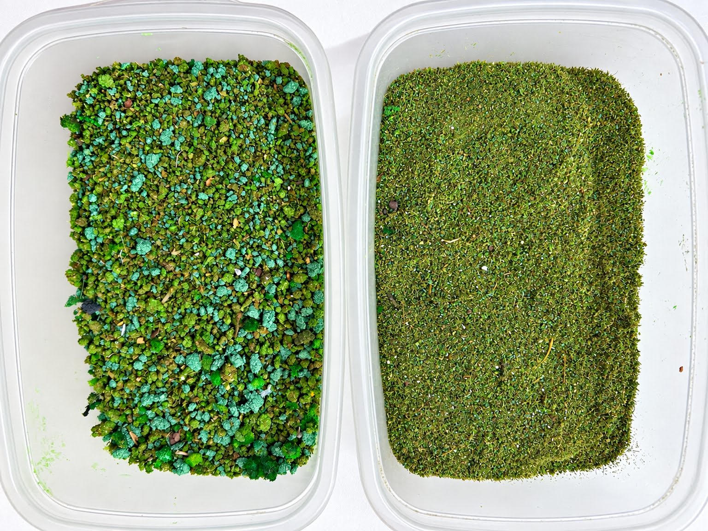

Como fazer grama verde
Uma maneira simples e econômica de produzir grama para a maquete é utilizar serragem bem peneirada e tingida. Com peneiras de tamanhos diferentes, também é possível obter materiais com texturas variadas para diferentes aplicações.

Para fazer a grama utilizada na maquete, comecei peneirando a serragem com uma peneira bem fina.
A serragem que passou pela peneira ficou reservada para representar a grama mais baixa e uniforme. A parte mais grossa foi peneirada novamente, desta vez com uma peneira um pouco maior.
Dessa forma, obtive dois tipos de material: uma serragem bem fina, usada como grama, e outra um pouco mais grossa, adequada para aplicação na base das árvores, junto aos mourões das cercas e em outros pontos onde seja desejada uma vegetação mais irregular.
Para tingir a serragem, coloque em um copo uma colher de chá de tinta PVA na cor verde-claro. Também podem ser usadas tinta para tecido ou anilina, sendo esta última a opção que apresenta melhor resultado.
Acrescente aproximadamente um dedo de álcool 70%. Se disponível, o álcool 90% é preferível.
Coloque uma quantidade de serragem no copo e misture bem. Se necessário, acrescente mais tinta e álcool aos poucos, até que toda a serragem fique uniformemente tingida.
Depois de bem misturada, espalhe a serragem e deixe secar ao sol.
Quando estiver completamente seca, a grama estará pronta para ser aplicada na maquete.